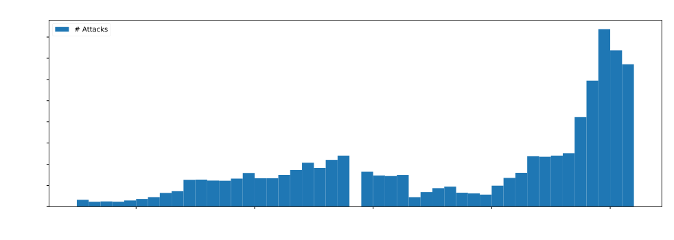
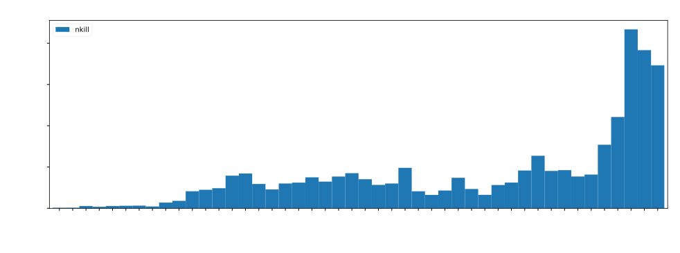
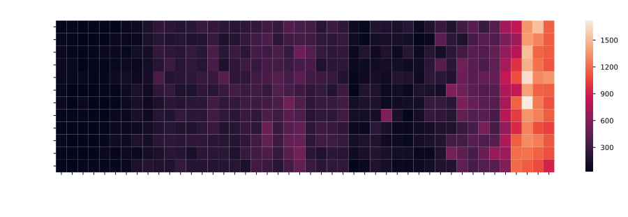
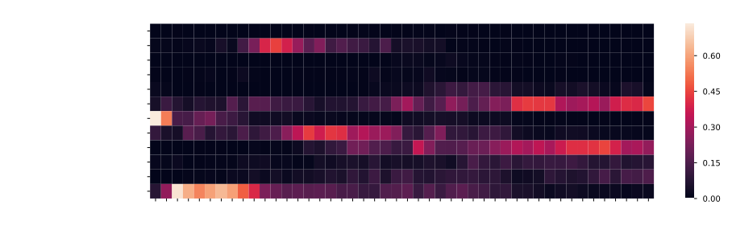
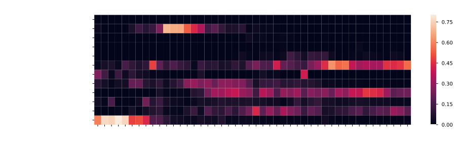
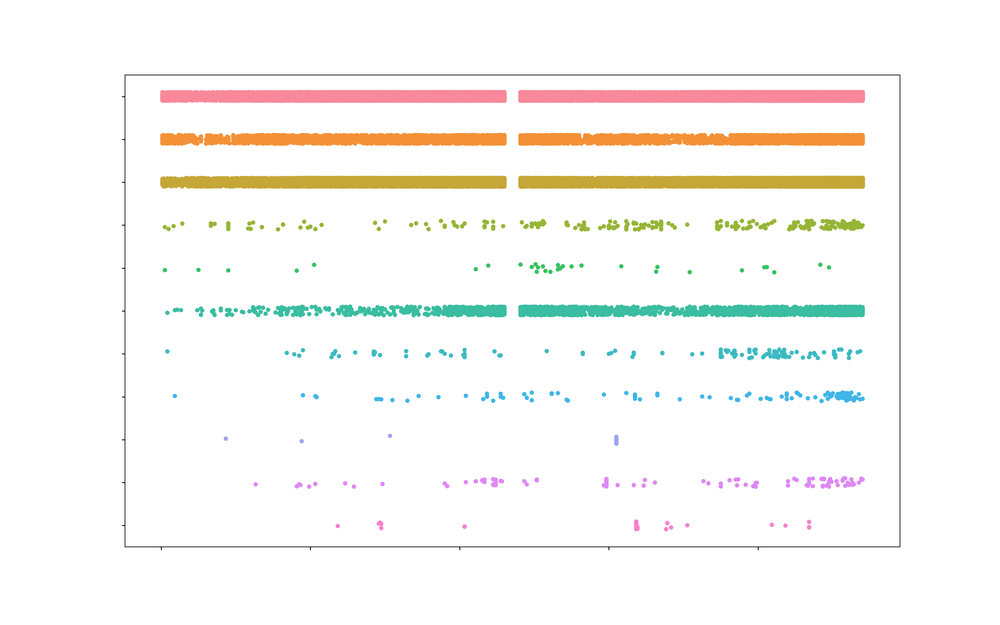
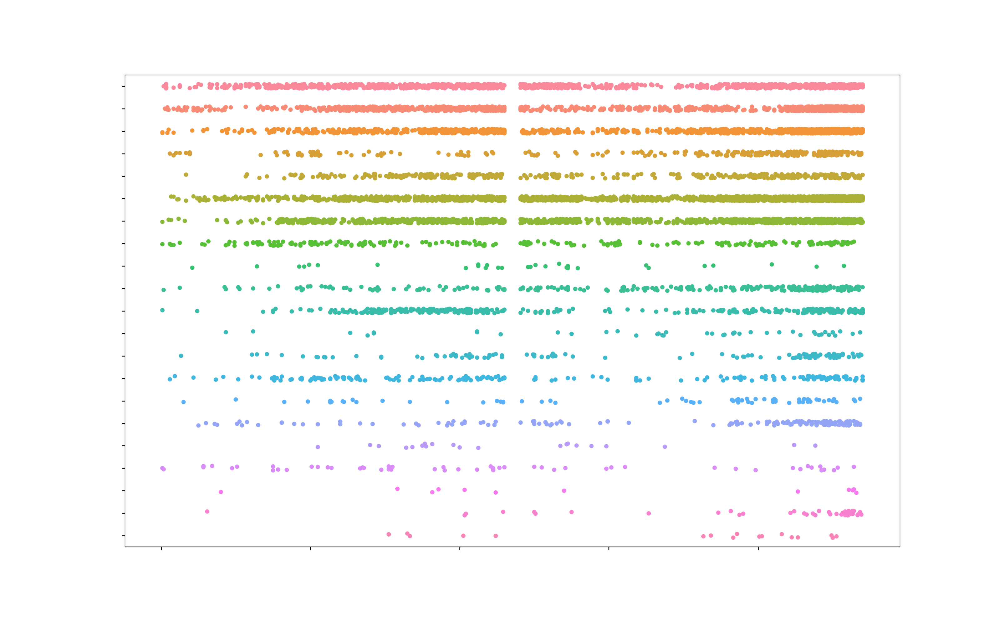

Abstract
Terrorism is a subject largely covered in the media, and, unfortunately, we became accustomed to its presence worldwide, particularly over the last decade. Nevertheless, the problem we are facing today is not new. The source of certain conflicts dates from multiple decades, some of which are still lasting today. Our goal is to track and vizualize terrorism evolution through the past 50 years based on "The Global Terrorism Database". There are many questions we can ask ourselves about terrorism, such as "Did attack mediums & reasons change over the years ?" or "Can we discriminate current/future conflictual zones ?". It would be presumptuous from us to say that we are going to solve major issues, or even predict futur attacks. However, through the exploration of the dataset, and by trying to answer those interrogations, we aim to grasp an overview and a better understanding to the evolution of terrorism.
A Brief Overview of Terrorism
Terrorism, as described by the Oxford dictionary is "The unlawful use of violence and intimidation, especially against civilians, in the pursuit of political aims." The term comes from the late 18th century (in reference to the rule of the Jacobin faction during the the period of the French Revolution known as the Terror). We are a long way from the 18th century, however, Humans have not left behind this terrible invention.
Since more than 200 years, terror attacks are plaguing the world, but we will not be able to go that far in history. Our dataset entries begin in 1970, and has been updated for the last time in late 2016. As an initial approach to understand that terrorism has always been a global problem, you will find a map displaying the location of attacks for each years beginning in 1970 until today. Fortunately, attacks are not happening always at the same place, but we see that the phenomenon is present every years, at different locations. Feel free to play with the map, stop during a specific year and zoom to a particular place.
Some Statistics
Over the years, the number of attacks, and, as a result, the number of casualties linked to them has changed. There is a slow but steady increase of attacks from 1970 to 1992. Please note that in 1993 was not a year where a worldwide ceasefire was achieved, the lack of data comes from a misplacement of the data collected resulting in the complete loss of the year entries. That being said, a reduction in the number of terror attack is visible from 1994 to 2005. After that, the number of attacks increased again, with a peak in 2014, before slowly fading again.
Those fluctuations of attacks, and casualties, are closely linked to the geopolitical situation of the world. For example, the high increase in the number of attacks in 1989-1992 is linked to the collapse of the Soviet bloc as well as the first Gulf War and the turmoil it created. In 1997, the Algerian Civil war created a peak of victims. An other event can be highlighted in 2001, with many casualties linked to the 9/11 Twin Tower terror attack. Since 2012, the number of incident and casualties has particularly increased due to the appearance of Daesh and the multiplication of attacks led by this terrorist group.
Here we have a better visualization of the evolution of casualties over the years divided by months. The idea behind this figure was to see if there is a timely pattern when terror attacks would occur more often. There is not. We have however more precise view with more informations. We can for example spot the Rwandan Genocide that happened in April 1994. The Algerian Civil War and the massacres perpetrated in December also stand out. As before, we can observe a peak of victims during the month of September 2011. The most terrible month happened in 2014, when in June, ISIS committed terrible attacks like the Badush prison massacre.

An other way to visualize the attacks is to sort them by region and show the highest occurrences, and a similar approach ca be done for casualties. We see here for example a very high number of attacks during year 1970 and 1971 in North America, but according to the casualty heat map visualization, there has not be many victims in this region at that time. After some research, we found an explanation for this, a forgotten period during which many non lethal terror attacks were conducted by left-wing activist in USA. During the seventies also, many attacks happened in Europe. The very high number of attacks and casualties is linked to the Northern Ireland conflict, also called The Troubles, and the fight for independence of Basque Country in Spain where ETA was terrorizing population. Moving forward in time, in 1981 to 1983 in Central America, two civil wars in Guatemala and Salvador are responsible for the high amount of both attacks and casualties in this region at that time. South America has also its amount of terrorism during the conflicts in Columbia, Chile and Peru during the period 1983 to 1990. Since years 2000s, Middle East and North Africa became more and more unstable, with second Gulf War and the Arab Spring, and even more lately the appearance of ISIS, this region is going under a high amount of attacks leading to a significant amount of casualties.



Above is a representation of the means used to conduct attacks. One can see that over the years, the use of explosive devices, firearms or the act of burning something where the most used weapons. The increase of attacks labelled as melee is linked to the fact that according to the definition, melee correspond to "A weapon—targeting people rather than property—that does not involve a projectile in which the user and target are in contact with it simultaneously.". Many incident from civil wars or regional troubles are labelled as melee, explaining the increase. More worrisome is to see the slow growth of chemical weapon use throughout the years. Also, we can see an increase in the use of vehicle to commit attacks, such as the recent one we saw across Western Europe.

Regarding the evolution of targets, we can see that the main targets of terror attacks are Police, Government, Military, Business or Private Citizen & Property. One can notice the increase of incident targeting Religious Figures/Institution which were rare in the 70s and seem to become common over the last decade. A similar pattern is observable for Educational Institutions. The typical targets of terrorism has now changed, and additionally to locations symbolizing the government or its army, terrorist group are also more and more targeting private citizens or places related to religion or education. Today’s terrorism aims at destabilizing government, but also destroy knowledge and bring back obscurantism.
You’ll find on the next map the 25 deadliest terror attacks registered in the dataset. By clicking on a pin you will have detailed informations about the attack. By exploring this map a bit you’ll find out that 9 of the deadliest attacks were perpetrated by ISIS after 2014.
On the map below are the approximate location of terrorist group according to the position of their attacks. Dots color represent the number of people killed by the group (green is zero, turning to red as the number increase) and the size of the dot illustrate the number of attack perpetrated by the group. By clicking on a dot, it displays more informations.
With this general approach of informations and global statistics about terrorism over the past decades, we have gained a broad vision of terrorism evolution. In the mind of a millennial, terrorism is linked to Middle East and sadly, to Islam. Thanks to the exploration above, it reminds us that terrorism has been present for many years, and in any region. Each region had its worst moment, early 70s for North America, the 70s in Europe, the 80s in Central and South America, and lately the South Asia and the Middle East.
In the final part below, we focus on this particular region by trying a novel graph-theory approach to map the interactions between different terrorist group present in the area. Some terror attacks are claimed by multiple groups, as if they cooperated to perpetrate it. Some others attacks are imputed to one group, while other group dispute the claim of the attack. Based on that, we could compute the relations of terrorist groups in Middle East, as displayed on the chord diagram below. A green chord between two groups mean collaboration, whereas a red chord mean quarrel. This approach allowed us to cluster batches of group collaborating together.
Finally, by combining informations from the locations and date of each group terrorist attacks, we could infer their region of influence. In addition to the relations between groups displayed above, one can have a better understanding of why certain groups might dispute their boundaries, as they try to extend their area of influence.
(Go over the dots to display the names)